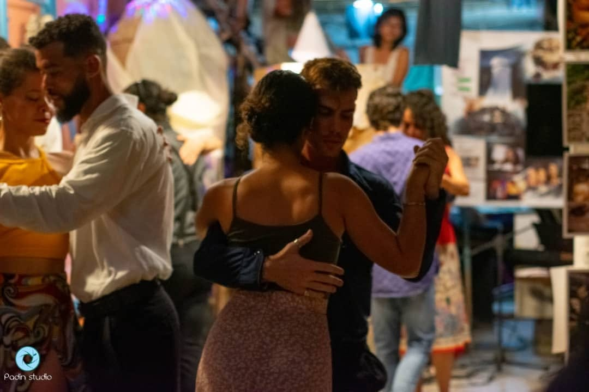
Cuba
17 jours au cœur des Caraïbes :
- le 7ème Festival de Tango de La Havane
- la Vieille Havane
- la Baie des Cochons
- Trinidad et la Vallée des Ingenios
- les Cours de salsa
Du 19 octobre au 4 novembre 2026, vibrez au rythme du tango lors du 7ème Festival de Tango de La Havane – un événement unique mêlant passion et culture cubaine – puis prolongez l'aventure à la découverte des trésors de l'île.
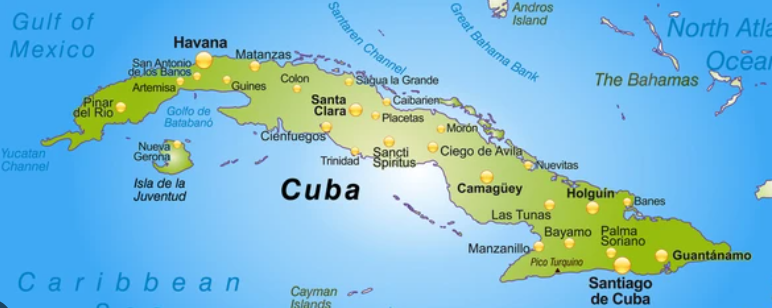
Ruelles pavées, façades coloniales et places animées : le cœur battant de la capitale, classé au patrimoine mondial de l'UNESCO.
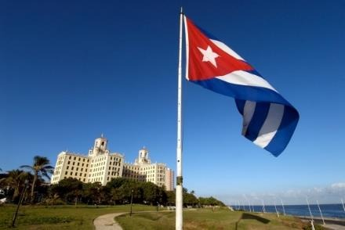
« Être Havanais, c'est vivre La Havane ! » — Le Capitole, le Parc Central, le Palais des Capitaines Généraux et la Place d'Armes.
Quartier résidentiel et culturel, entre avenues arborées, musées et théâtres : le Musée Napoléonien, le Musée des Arts Décoratifs et l'effervescence de la 23ème avenue.
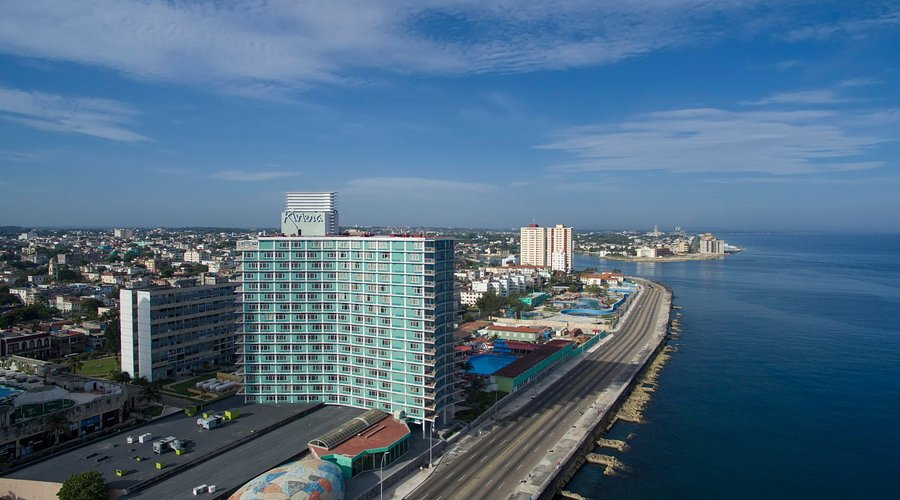
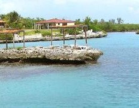
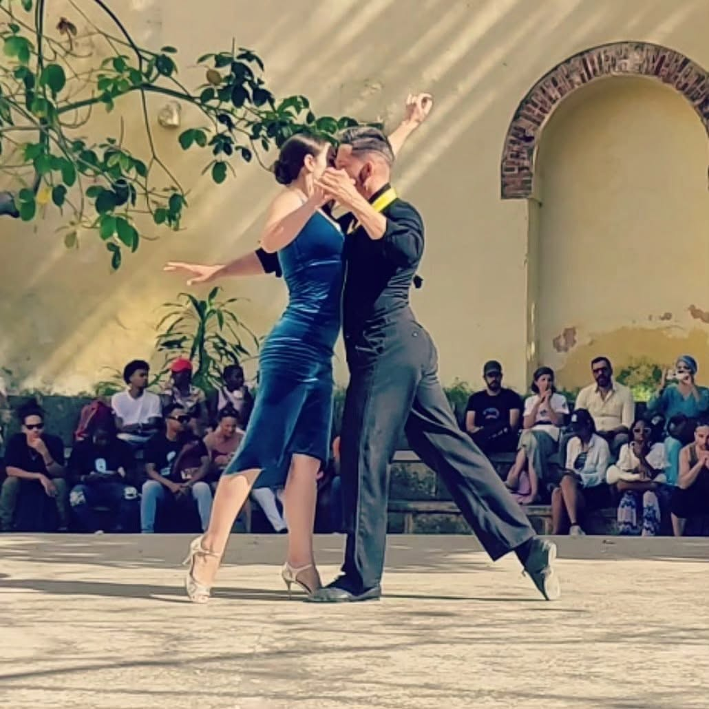
Spectacles de tango-théâtre, tango-fusion et tango vélo, milongas en plein air, concours « Isla Tango », feria d'artisans et musique en direct : trois jours dédiés à la passion argentine, revisitée dans une ambiance cubaine.

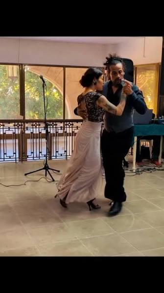
- Initiation & techniques de base
- Cours avec TangueArte, en amont du festival
- Rueda de Milonga
- Tango-thérapie
Danses et musique cubaines
Salsa, chacha, rumba… à la découverte des danses cubaines
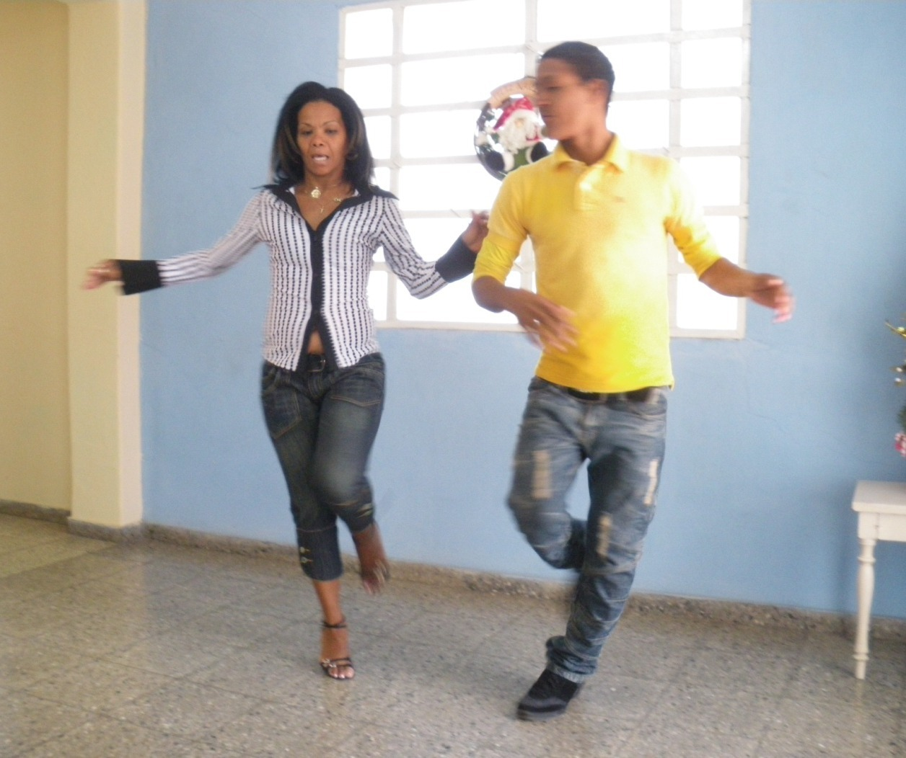
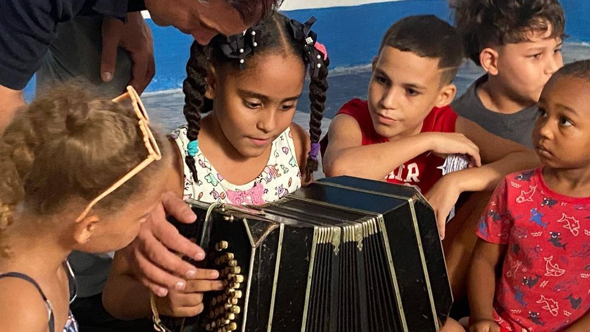
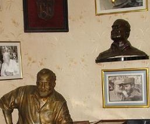

La Baie des Cochons et les Playas del Este
Playa Larga · Ciénaga de Zapata · Playa Santa María
Eaux turquoise, mangroves préservées et farniente : deux visages de la côte cubaine, entre plongée dans l'histoire de la Baie des Cochons et détente balnéaire sur les plages de l'Est.
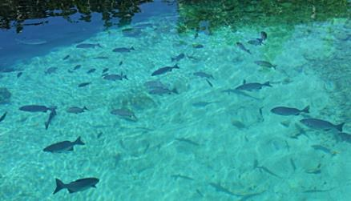

Ruelles pavées, façades pastel et ambiance intemporelle : la ville coloniale la mieux préservée de Cuba, entre Palacio Cantero et Casa de la Trova.

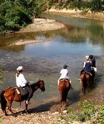
Transferts en voiture américaine 1950
Le charme rétro des voitures américaines pour sillonner l'île, entre La Havane et Trinidad.


Vieille Havane, Capitole, Parc Central, Palais des Capitaines Généraux, Place d'Armes
Plages de l'Est – Tarará / Santa María
Dîner – Restaurant El Bodegón
Cours de salsa (2h/j)
Temps libre
*Programme indicatif, ajusté selon le calendrier définitif communiqué par le festival.
Piscine naturelle Caleta Buena
Playa Larga · Baie des Cochons
Trinidad – visite de la ville, Palacio Cantero
Casa de la Trova
La Havane bucolique – Capdevila
Callejón de Hamel
Cérémonie santera — Centro Habana / Temps libre
Logement à la Vieille Havane
Saisir les 9 premiers chiffres de la carte bancaire pour générer l'attestation (Mondial Assistance). Assistance 24h/24 – 7j/7.
- Frais médicaux : 155 000 €
- Rapatriement / transport sanitaire
- Pas de vaccin obligatoire
- Langue officielle : l'espagnol
- Décalage horaire : – 6 heures (12h à Paris = 6h à La Havane)
- Eau du robinet potable et propre à la consommation
- Déjeuners pris ensemble ; dîners libres (sauf 3 soirées : cubaine, cocktails, Trinidad)
- Monnaie : peso cubain (CUP) – 1 € ≈ 134 CUP (taux indicatif, change en banque ou Cadeca)
- Distributeurs automatiques : commission de 3 % sur le montant en $US ; cartes de crédit US non acceptées
- Change €/$US : banques et CADECAs uniquement
- Conseil : ne jamais changer à l'aéroport ni dans la rue
Restaurant / paladar : 10-35 € · Cabaret ou ballet/opéra : ~30 € · Cocktail (mojito, daïquiri…) : ~4 € · Préférer l'app « La Nave » aux Cubataxis, plus onéreux.
De tous les pays d'Amérique latine, Cuba est l'un des plus sûrs. Quelques règles simples permettent d'aborder le séjour en toute sérénité.
- Éviter de marcher seul(e) le soir, surtout dans les rues peu éclairées
- Décliner poliment mais fermement les sollicitations des « jinetero(a)s »
- Marcher au milieu de la rue dans les vieux quartiers
- Ne pas acheter de cigares dans la rue (50 maximum autorisés à la sortie de Cuba)
- Ne sortir qu'avec une copie du passeport et du visa, sans bijoux ni argent superflu
- Vérifier les additions manuscrites au restaurant et la monnaie rendue
- Prévoir une pochette étanche pour ses papiers en cas de forte pluie
- Bonnes chaussures indispensables ; prises électriques 110V/220V au format américain